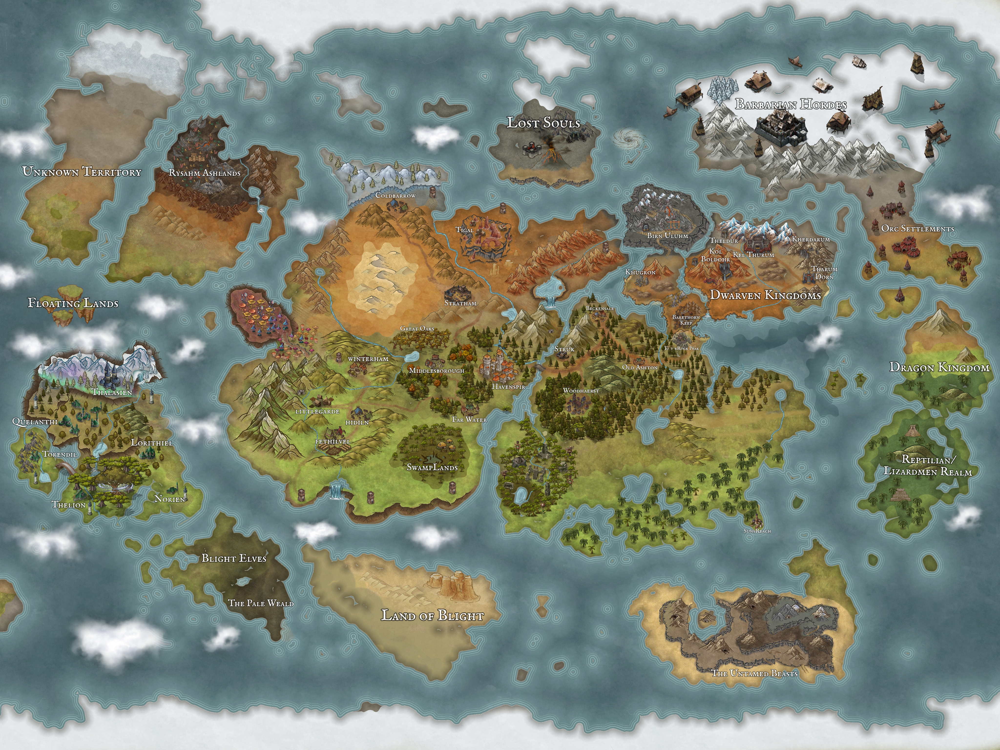

➕ Zoom In
➖ Zoom Out
↺ Reset
📍 Add Location
📋 Export Positions

⮜ Return to Main Hub
The Known World
Welcome to the Atlas. Select a pulsing marker on the map to access geographical records, regional threats, and local inhabitants.
✏️ Edit Location
🗑 Delete Pin
New Location
Location Name
Description
Encounter & Hazard Notes
Session Notes
(ongoing GM observations)
Cancel
💾 Save Location